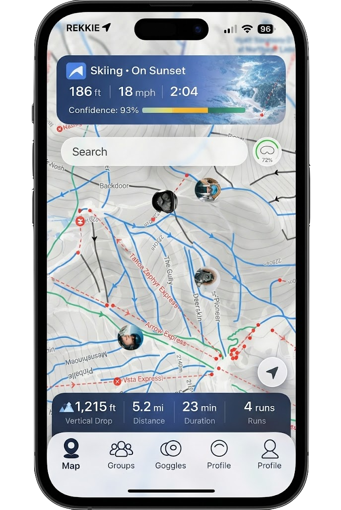

Student and Developer.
As a sophomore at Cornell University, I am a dedicated student passionate about computer science and data science. My interests lie at the intersection of technology and finance, where I aim to develop data-driven solutions that create a positive impact.
My Projects
Skills & Focus Areas
Combining technical expertise with a passion for meaningful impact.
Data Science
Machine learning, data analysis, and predictive modeling to extract insights and drive decisions.
Software Development
Designing and building scalable applications with clean, maintainable code.
Finance & Business
Understanding markets and integrating financial thinking into technical projects.
Featured Internship
Rekkie AR Ski Goggles Slope and State Classification
ML‑driven ski activity classification (runs, lifts, stops) from GPX + GeoJSON
An ML‑focused classification pipeline that models ski activity states from GPS tracks and resort geometry. It fuses learned motion features with map‑matching to predict run, lift, and stop states, then outputs clean labels, summaries, and visual timelines for analysis.
Key features
- HMM inference with Viterbi smoothing
- Map‑matching to ski runs and lifts
- Per‑run summaries + session stats
Why it matters
- Reliable offline analysis for ski sessions
- Clean segmentation for analytics and coaching
- Aligned to resort geometry for accuracy

* Concept artFeatured Project
LiveDance
Computer vision-powered dance training with real-time pose feedback, alignment scoring, and movement coaching.
LiveDance tracks a dancer from a live camera feed, compares their pose to a reference performance, and delivers corrective feedback on posture, timing, and alignment for faster skill progression.
What it does
- Captures pose landmarks from a live camera feed.
- Aligns movement sequences to a reference routine.
- Highlights corrective cues for posture and timing.
Architecture
- Frontend (React): camera capture, UI, and visual overlays.
- Backend (Python): MediaPipe processing and ML inference.
- Communication: REST API over localhost.
Stable skeletal rigging
Smoothed pose estimation
Real-time feedback
Posture, timing, alignment
MVC architecture
Clear separation of concerns
Developed LiveDance, integrating MoveNet and BlazePose with stable skeletal rigging to deliver corrective feedback that improved user learning beyond existing scoring tools. Primarily worked on the pose extraction pipeline powering the real-time feedback loop.
More Projects
Focused on data, engineering, and sustainability with real‑world impact.
Twitter Sustainability Analysis
Conducted a comprehensive content analysis of Twitter data to uncover trends in environmental conversations using NLP techniques.
Published by Cambridge University Press
View DetailsMillennium Load Forecasting
Partnered on a hedge‑fund‑sponsored electricity load forecasting project for Millennium, building models to inform trading strategy and risk decisions with more reliable demand signals.
Explore MillenniumBullStreetBets ETF Recomender
Python‑based application to identify surges in public interest across any topic and recommend relevant ETFs aligned with those trends.
View DetailsTwitter Sustainability Dataset
Published dataset of 5,000+ tweets using #sustainability, with metadata and preprocessing for topic modeling and sentiment analysis.
View DetailsLet’s Connect
If you’d like to collaborate, have questions, or just want to say hello, feel free to reach out.
Contact Details
Email: ajg359@cornell.edu
LinkedIn: linkedin.com/in/aydan-gerber
Location: Ithaca, NY